The submissions table (including incomplete submissions)
For event organisersNot an organiser?
The submissions table is a very useful tool as an overview of submission info, and to manipulate and extract data. You can add and remove columns, delete or edit submissions and download reports. You can also send emails from the table.#
NB: Before you read this guidance, it is advised that you become familiar with how the tables work throughout the Oxford Abstracts system by reading An overview of the tables function. The submission table is used as an example in that article.
Go to How to email submitters from tables.
Go to Event dashboard → Abstract Management → Submissions → Table to access the table
Columns#
Click on the top right button named Columns above the Submission Table.
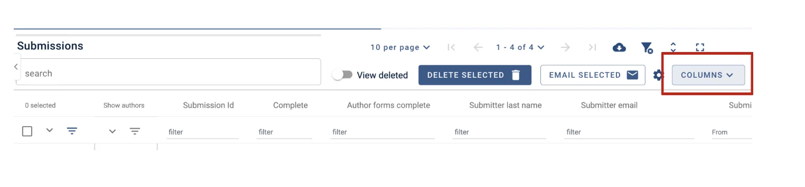
The options will appear grouped into two tables
Main table - Submission data, and Submission responses.
Accordion Tables - Author information
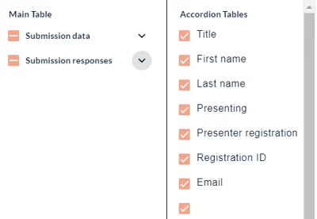
Under Submission data, you will find a list of all the data relating to the submitter - eg name, email, last updated etc.
You can toggle each group as below:
| Display all fields | Hide all fields | Some fields are selected |
To choose which fields you would like displayed in the table, click on the down arrow.
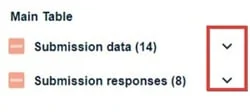
When you have made your selection, click on the up arrow
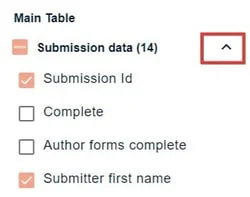
Submission responses include all responses to the questions in the submission form.
When you have chosen the fields you would like displayed from the Submission data, Submission responses, and Accordion Tables click the arrow to hide the selection window.
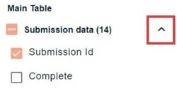
See Accordion tables below for more information on finding author data.
On the top left hand side of the table
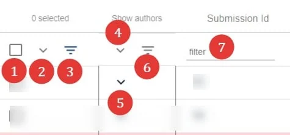
1) Check boxes to select - eg, to delete. Choose the top one if you would like to select all rows (or all filtered rows if you have filtered any) in the table on that page, or select individually (first column in table)
2) Click the next icon, the down arrow to reveal more options.
3) Filter the list according to the boxes checked - ie - all those checked will remain in view.
4),5) and 6) See Accordion rows, below.
7) Filter fields - filter by any keyword / text string (For columns that contain numerical data, you can filter by minimum, exact, and maximum. You can also view a range by entering a figure in min, and a figure in max.)
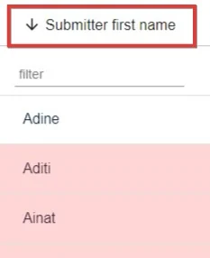
Click on any header to order submissions alphabetically or numerically.
The down arrow will display from A-Z, (or 1-10) Click again to order from Z-A (or 10-1) (up arrow).
Accordion tables#
You will see a column of down arrows in the second column of the table, headed Show authors. These expose the child rows. Click on the top one (red) to reveal all author and affiliation child rows, or select individually (green).
The icon noted with the purple arrow allows you to hide the empty rows when filtering in the accordion rows.
Each review will appear in 'child' rows.
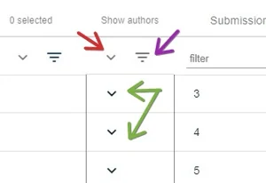
When you reveal any accordion rows, an additional icon will appear. This will allow you to truncate or untruncate the list of authors on display.
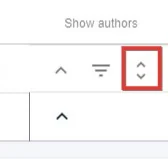
Each author will appear in 'child' rows. These can be filtered and ordered in the same way as the 'parent' rows.
If you would like to search the accordion rows - eg, if you want to find a list of all presenters:
1) Ensure the relevant accordion rows are on display.
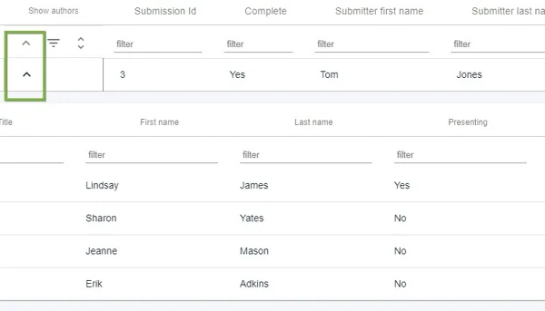
2: Enter the search term in the relevant column. You can then select Hide empty rows if required.
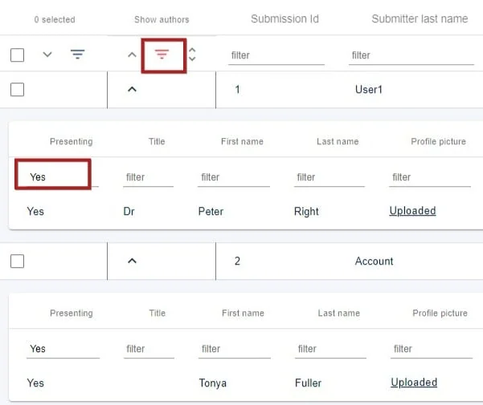

Restore a Deleted Submission
If a submission is accidentally deleted, you can reinstate it.
From your dashboard, click the Submission Tab in the left-hand column.
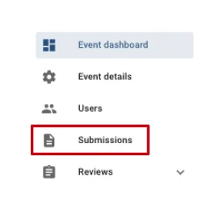
On the submission page, you will need to toggle on View Deleted at the top of the page.
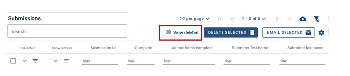
You will now see the submission/s that have been deleted.
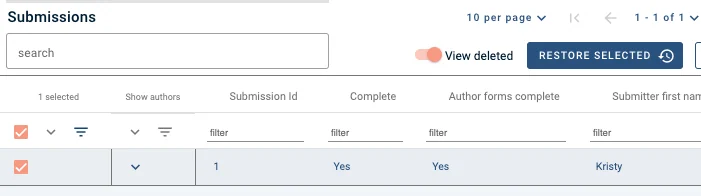
To restore the submission, make sure you have selected the tick box of the submission and then click on the Restore Selected Button at the top of the page.
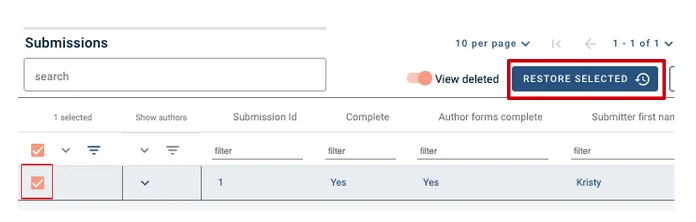
Then click the View Deleted toggle to Off, so it turns to grey.
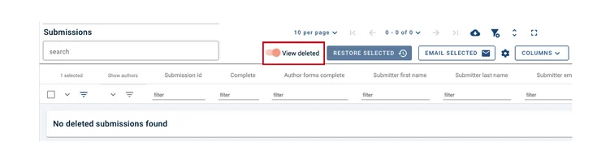
You will be taken back to the Submission Table, where you will see that the submission has been re-activated.
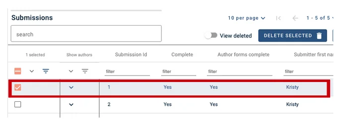
Common questions#
A user has reported that his / her submission is marked as incomplete. How can I check this?#
Submission forms are marked as complete when all mandatory fields have been completed.
To check, see Editing a user's submission. Fields that haven't been marked as complete will be highlighted in pink. Sometimes there are missing fields in the Authors and affiliations section, so check this. Also see Word and character count.
Didn't solve it? Ask our support team
No question is too small, and there's no charge for asking. Raise a ticket and someone who knows the software will pick it up.
Did this page solve it?
Thanks — this helps us fix it.